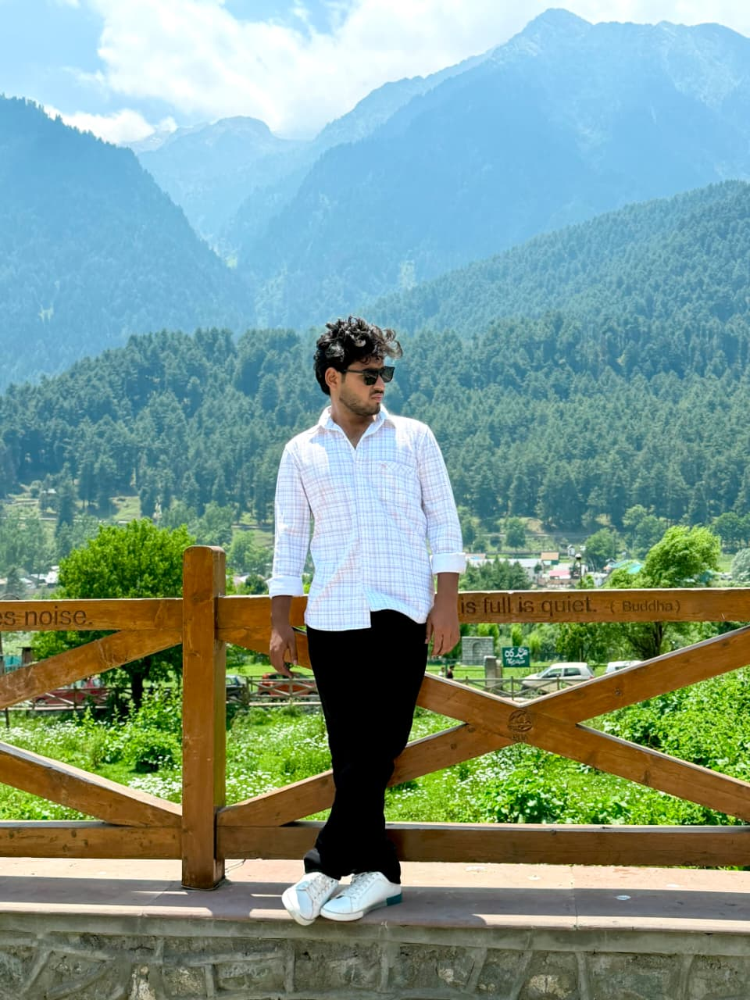

COER University
Building core academic knowledge and a foundation for understanding structures, materials, and construction.
Hello, I'm
Learner / Builder / Explorer
B.Tech Civil Engineering student at COER University, exploring practical experiences, developing useful skills, and staying curious about how things are designed and built.

About me
I'm first-year B.tech Civil Engineering student at COER University, interested in learning beyond the classroom, exploring new ideas, and gaining practical exposure through open-site experiences and real-world observation.
I believe progress comes from curiosity, consistency, and being willing to learn by doing. My goal is to strengthen my technical foundation, build practical skills, and keep improving both personally and professionally.
Skills
Skills and software experience can be updated as projects and coursework progress.
Experience & learning
Building core academic knowledge and a foundation for understanding structures, materials, and construction.
Observing site activities and learning how classroom concepts connect with real-world construction practices.
Exploring new tools, ideas, and learning resources to develop a broader and more practical skill set.
Projects
A space to showcase civil engineering assignments, drawings, models, and concepts as they are completed.
Key takeaways from open-site experiences, construction processes, materials, and on-site coordination.
This website is a starting point to document learning, skills, experiences, and future work.
These are portfolio sections/placeholders, not claims of completed professional projects. Replace them with real work when ready.
Interests
Get in touch
I'm open to learning opportunities, meaningful collaborations, practical exposure, and conversations with people who enjoy building and improving things.